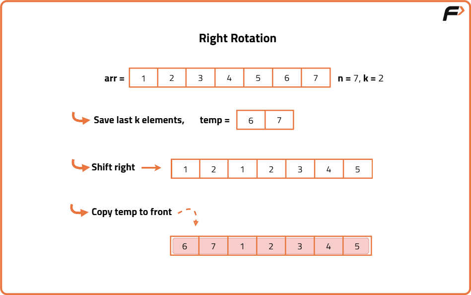
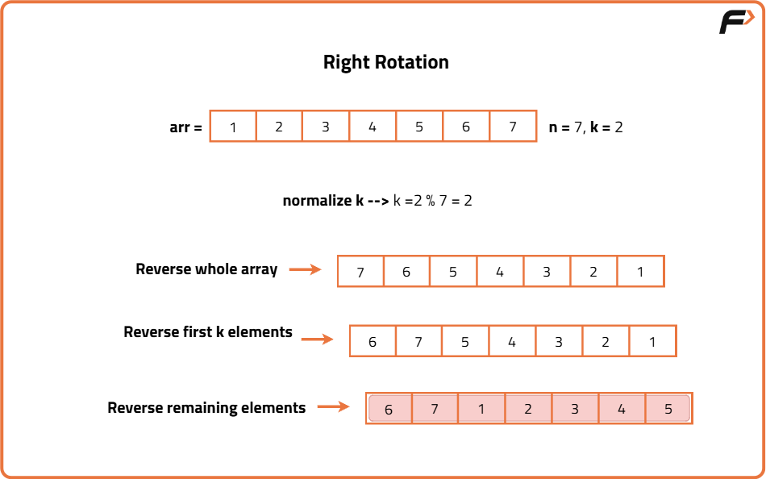

Rotate array by K elements
Problem Statement: Given an array of integers, rotating array of elements by k elements either left or right.
Examples
Input : nums = [1, 2, 3, 4, 5, 6, 7], k = 2, right Output : [6, 7, 1, 2, 3, 4, 5] Explanation : rotate 1 step to the right: [7, 1, 2, 3, 4, 5, 6] rotate 2 steps to the right: [6, 7, 1, 2, 3, 4, 5]
Input : nums = [1, 2, 3, 4, 5, 6], k=2, left Output : [3, 4, 5, 6, 1, 2] Explanation :rotate 1 step to the left: [2, 3, 4, 5, 6, 1] rotate 2 steps to the left: [3, 4, 5, 6, 1, 2]
Disclaimer: Here is the practice link to help you assess your knowledge better. It's highly recommend trying to solve it before looking at the solution.
Brute Force Approach
Algorithm
- Take the last k elements and store them in a temporary array.
- Shift the first n-k elements to the right by k positions.
- Copy the k stored elements from the temporary array to the start of the original array.
Left Rotation: We store the first k elements in a temporary array. Then we shift the remaining n-k elements to the left by k positions. Finally, we copy the elements from the temporary array to the end of the array. This achieves a left rotation by k positions.
- Store the first k elements in a temporary array.
- Shift the remaining elements to the left by k positions.
- Copy the k stored elements to the end of the original array.

Code
#include <bits/stdc++.h>
using namespace std;
class Solution {
public:
// Function to rotate the array to the right by k positions
void rotateRight(int arr[], int n, int k) {
if (n == 0) return;
// Normalize k if greater than n
k = k % n;
// Store last k elements in a temporary array
int temp[k];
for (int i = n - k; i < n; i++) {
temp[i - n + k] = arr[i];
}
// Shift the first n-k elements to the right by k steps
for (int i = n - k - 1; i >= 0; i--) {
arr[i + k] = arr[i];
}
// Copy back the k elements to the start
for (int i = 0; i < k; i++) {
arr[i] = temp[i];
}
}
// Function to rotate the array to the left by k positions
void rotateLeft(int arr[], int n, int k) {
if (n == 0) return;
// Normalize k if greater than n
k = k % n;
// Store first k elements in temporary array
int temp[k];
for (int i = 0; i < k; i++) {
temp[i] = arr[i];
}
// Shift remaining elements to the left by k positions
for (int i = k; i < n; i++) {
arr[i - k] = arr[i];
}
// Copy back the stored elements to the end
for (int i = 0; i < k; i++) {
arr[n - k + i] = temp[i];
}
}
};
// Driver code
int main() {
Solution sol;
int arr[] = {1, 2, 3, 4, 5, 6, 7};
int n = sizeof(arr) / sizeof(arr[0]);
int k = 2;
sol.rotateRight(arr, n, k);
cout << "Array after right rotation by " << k << " steps:\n";
for (int i = 0; i < n; i++) cout << arr[i] << " ";
cout << "\n";
// Reset array for left rotation demo
int arr2[] = {1, 2, 3, 4, 5, 6, 7};
sol.rotateLeft(arr2, n, k);
cout << "Array after left rotation by " << k << " steps:\n";
for (int i = 0; i < n; i++) cout << arr2[i] << " ";
return 0;
}
Complexity Analysis
Time Complexity: O(n), We are performing a constant number of linear operations copying `k` elements and shifting up to `n-k` elements.
Space Complexity: O(k) ,A temporary array of size `k` is used to store either the first `k` or last `k` elements depending on the direction of rotation.
Optimal Approach
Algorithm
- For Right Rotation by k steps:
- Reverse the entire array
- Reverse the first k elements
- Reverse the remaining n - k elements
- For Left Rotation by k steps:
- Reverse the first k elements
- Reverse the remaining n - k elements
- Reverse the entire array
- Normalize k by doing k = k % N
- If direction is "right":
- Reverse the entire array
- Reverse the first k elements
- Reverse the rest (from k to end)
- If direction is "left":
- Reverse the first k elements
- Reverse the rest (from k to end)
- Reverse the entire array

Code
#include <bits/stdc++.h>
using namespace std;
class Solution {
public:
// Helper function to reverse a subarray from index start to end
void reverseArray(vector<int>& nums, int start, int end) {
while (start < end) {
swap(nums[start], nums[end]);
start++;
end--;
}
}
// Function to rotate array left or right by k steps
vector<int> rotateArray(vector<int>& nums, int k, string direction) {
int n = nums.size();
// Edge case: empty or no rotation
if (n == 0 || k == 0) return nums;
// Normalize k
k = k % n;
if (direction == "right") {
// Step 1: Reverse the whole array
reverseArray(nums, 0, n - 1);
// Step 2: Reverse first k elements
reverseArray(nums, 0, k - 1);
// Step 3: Reverse remaining n-k elements
reverseArray(nums, k, n - 1);
}
else if (direction == "left") {
// Step 1: Reverse first k elements
reverseArray(nums, 0, k - 1);
// Step 2: Reverse remaining n-k elements
reverseArray(nums, k, n - 1);
// Step 3: Reverse the whole array
reverseArray(nums, 0, n - 1);
}
return nums;
}
};
// Driver code
int main() {
Solution sol;
vector<int> nums = {1, 2, 3, 4, 5, 6, 7};
int k = 2;
string dir = "right";
vector<int> result = sol.rotateArray(nums, k, dir);
for (int num : result) {
cout << num << " ";
}
return 0;
}
Complexity Analysis
Time Complexity: O(N), We reverse parts of the array each reverse takes linear time. So total work is 3 × O(N) = O(N).
Space Complexity: O(1) All modifications are done in-place, using only a few temporary variables.